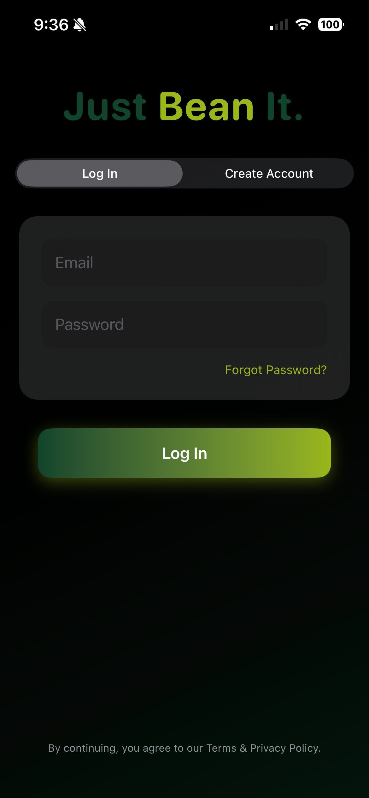
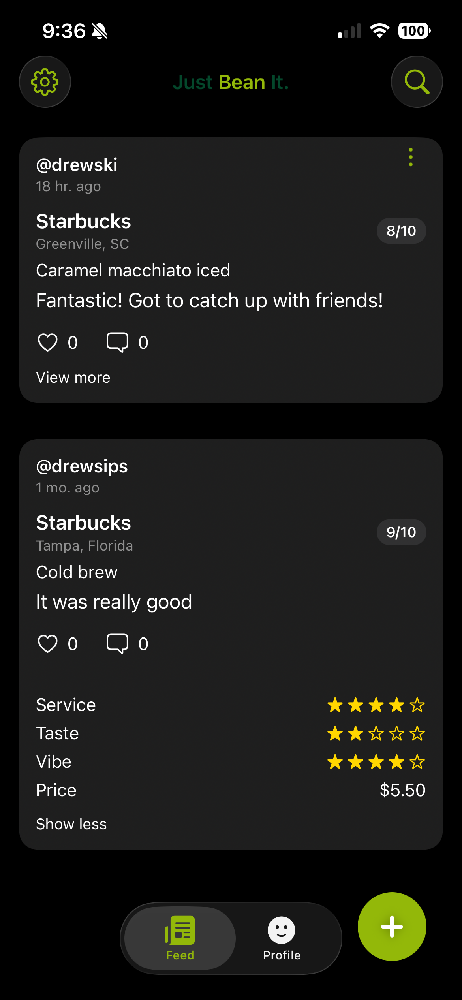
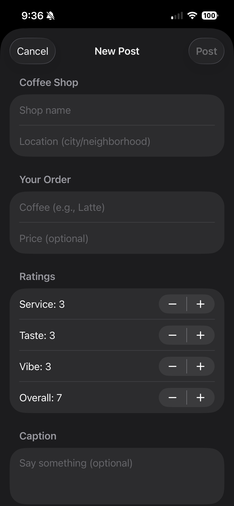
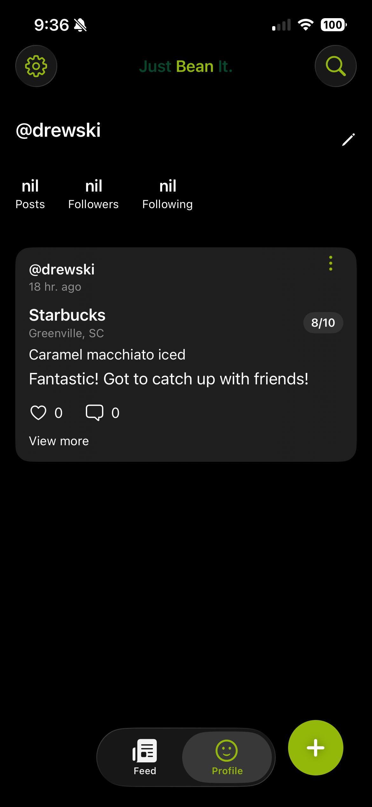

Just Bean It.
View Code →
Just Bean It is a mobile-first coffee discovery and ranking application built with SwiftUI and Firebase. Users explore drinks, rank favorites, and share reviews while maintaining persistent sessions.



